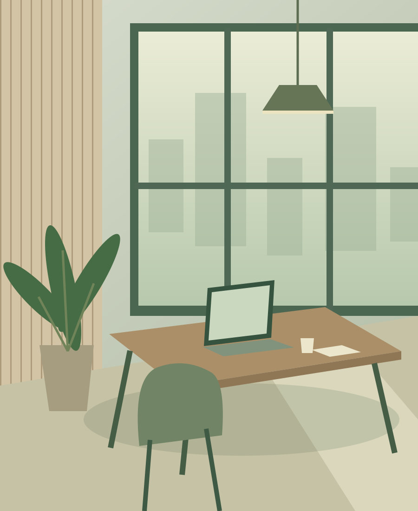

Focused features
Clear core features for expenses, notes, and tasks.
SIMPLE TOOLS. EVERYDAY VALUE.
Track your spending, capture an idea, and plan what comes next.
Focused, lightweight iPhone utilities from yuanfanzhituo.
01 / OUR FOCUS
Our apps help you organize expenses, capture ideas, and manage tasks. Clear features and direct workflows make them easy to use every day.
Clear core features for expenses, notes, and tasks.
Get started with any of our three apps without creating an account.
Expenses, notes, and tasks are designed around use on your device.
Dedicated email channels for technical and business inquiries.
02 / PRODUCTS & SERVICES
Find the tool that fits your day.
Explore and download it on the App Store.
Record income and expenses, review monthly balances, and see spending by category for a clearer view of your finances.
Quick entries · Category search · Monthly summaries
View on the App StoreCapture ideas, reminders, and everyday notes. Search and pin important content to find it again quickly.
Local notes · Tag search · Pinned notes
View on the App StoreOrganize tasks into lists, set due dates and priorities, and break work into subtasks to plan your day.
Today overview · Lists · Due dates & priorities
View on the App Store
03 / OUR APPROACH
From adding records to finding content, everyday actions stay clear and direct.
Categories, search, pinned notes, and task priorities support practical daily needs.
Reach our technical support team directly by email for help with our apps.
LET’S STAY CONNECTED
Choose the right contact channel and tell us what you have in mind.